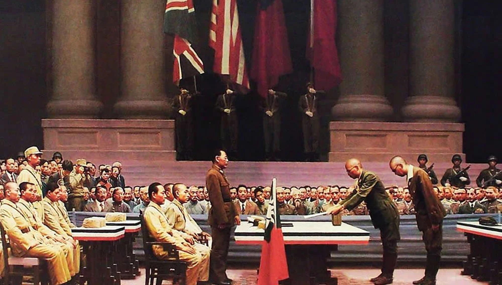
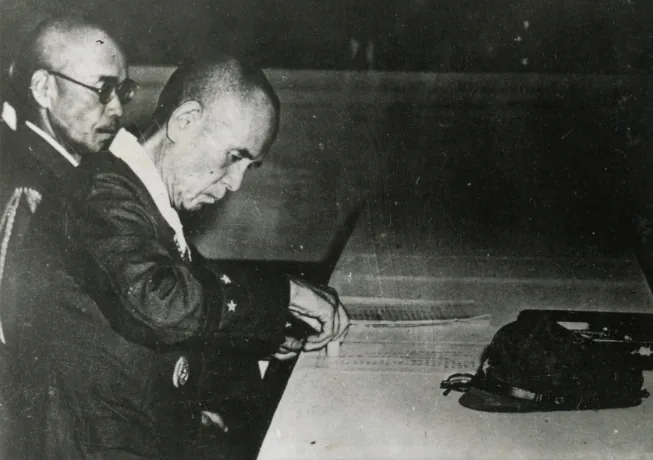
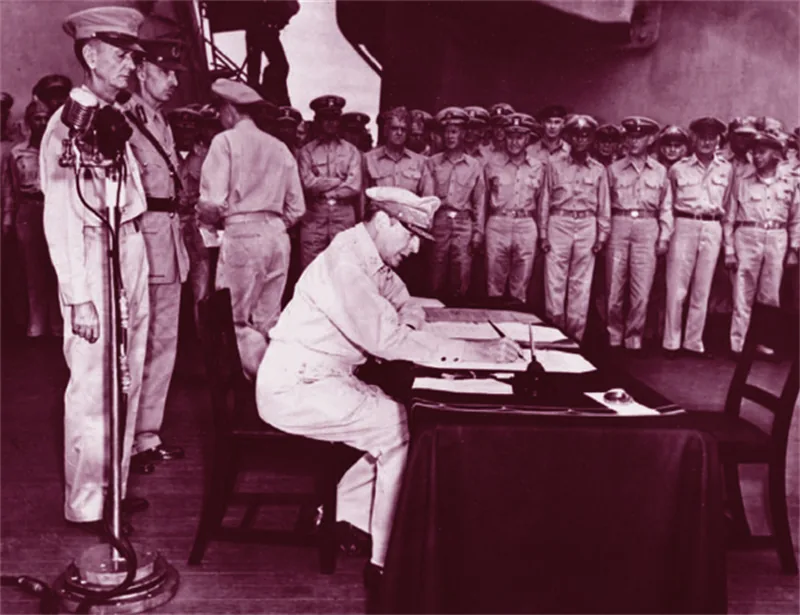

日本投降
1945 年 8 月 15 日中午，日本天皇裕仁以广播"终战诏书"形式正式宣布日本无条件投降。 日本投降标志着中国人民抗日战争的伟大胜利，这是近代以来中国抗击外敌入侵的第一次完全胜利。 中国战场进行重大战役 200 余次，为世界反法西斯战争胜利作出了不可磨灭的巨大贡献。

01 · 背景起因 Background
国际形势逆转。1945 年 5 月，德国法西斯投降，欧洲战场结束。 日本在太平洋战场节节败退，陷入四面楚歌的困境，但仍拒绝接受无条件投降。
最后通牒。1945 年 7 月 26 日，中、美、英三国联合发表《波茨坦公告》， 敦促日本立即无条件投降。日本当局最初拒绝，随后形势急转直下—— 8 月 6 日和 9 日，美国先后在日本广岛和长崎投下原子弹；8 月 8 日，苏联对日宣战，出兵东北； 8 月 9 日，毛泽东发表《对日寇的最后一战》，号召全面反攻。
02 · 事件经过 Course of Events
03 · 主要人物 Figures
国民政府军事委员会军令部部长、陆军上将。1945 年 9 月 2 日在东京湾密苏里号战列舰上代表中国签字受降， 继美国代表尼米兹之后第二个签字。
同盟国最高司令官。9 月 2 日主持东京湾受降仪式，以盟军最高统帅身份签字， 代表同盟国接受日本投降。
1945 年 9 月 9 日在南京中国战区受降仪式上签字，代表侵华日军向中国投降。
日本陆军参谋总长。9 月 2 日代表日本帝国大本营在密苏里号签署投降书。
04 · 历史图片与史料 Archive


05 · 事件关键知识梳理 Essentials
关键信息 Key Facts
关键名词 Glossary
| 名词 | 解释 |
|---|---|
| 《波茨坦公告》 | 1945 年 7 月 26 日中、美、英三国联合发表的文件，敦促日本立即无条件投降，重申对日本侵略行为的处置原则。 |
| 《终战诏书》 | 1945 年 8 月 14 日，日本天皇亲自出席的最高决策会议（御前会议）决定接受《波茨坦公告》；次日（8 月 15 日）天皇以广播形式发布此诏书，正式宣布日本无条件投降。 |
| 东京湾受降 | 1945 年 9 月 2 日，在东京湾美国"密苏里"号军舰上举行的日本投降签字仪式，重光葵、梅津美治郎代表日方签字。至此中国抗日战争胜利结束。 |
| 中国战区受降 | 1945 年 9 月 9 日在南京举行的中国战区日本投降签字仪式，冈村宁次签署投降书，侵华日军 128 万余人向中国投降。 |
| 《对日寇的最后一战》 | 1945 年 8 月 9 日毛泽东发表的声明，号召中国人民的一切抗日力量举行全国规模的反攻。 |
06 · 意义与价值 Significance
日本投降，标志着中国人民抗日战争取得伟大胜利——这是近代以来中国抗击外敌入侵的第一次完全胜利。
彻底粉碎了日本军国主义殖民奴役中国的图谋，洗刷了近代以来中国抗击外来侵略屡战屡败的民族耻辱。
中国战场进行重大战役 200 余次，为世界反法西斯战争胜利作出了不可磨灭的巨大贡献。
1945 年 9 月 9 日，中国战区日本投降签字仪式在南京举行，冈村宁次正式签署投降书——这是十四年浴血抗战换来的历史性荣光。